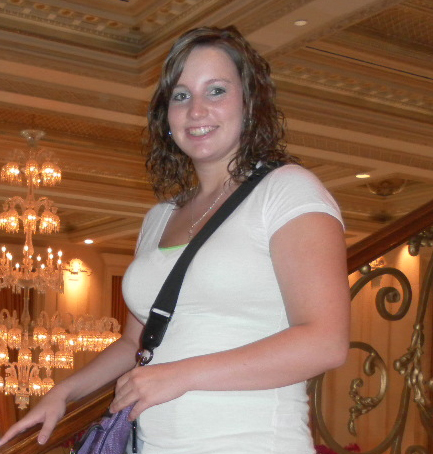

|
|
|||||

MELINDA PARNELL Leakesville, MS 39451 (601) 123-45678 melinda.parnell@eagles.usm.edu
THE UNIVERSITY OF SOUTHERN MISSISSIPPI Bachelor of Science degree, Instructional Technology Hattiesburg, MS (Business Technology Education), expected May 2016 JONES COUNTY JUNIOR COLLEGE Academic Coursework, Aug. 2010— May 2011 Ellisville, MS WILLIAM CAREY UNIVERSITY Academic Coursework, Aug. 2009—May 2010 Hattiesburg, MS SKILLS / COMPETENCIES * Microsoft Word * Microsoft PowerPoint * Microsoft Excel * Microsoft Outlook * Adobe Photoshop * QuarkXPress * Can accurately type 60+ GWAM * Customer Service / Public Relations * Social media for businesses * Image editing * Website design PROFESSIONAL EXPERIENCE COPY AND GRAPHICS EDITOR, Sept. 2011— Present (Full Time) Greene County Herald, The Turner Group, LLC - Leakesville, MS * Receipt and record of cash and check payments made * Taking in and type-setting events, cards of thanks, birth/birthday announcements, etc. * Building display ads in QuarkXPress * General photo editing using Adobe Photoshop * Manage subscriber database using InterLink * General website maintenance * Building programs, booklets, and other print jobs in Microsoft Word, QuarkXPress, or Adobe Photoshop * Printing jobs that can be completed in—house * Filing and mailing proofs of publication and tear sheets to advertisers * Proofreading pages before going to press * Ordering of office supplies * Photographing parades, other events as needed References available upon request. |
|||||
Comments or suggestions? Contact Melinda The University of Southern Mississippi Last Update: April 2018 URL: https://mrsparnell.github.io/coursereflection/ |